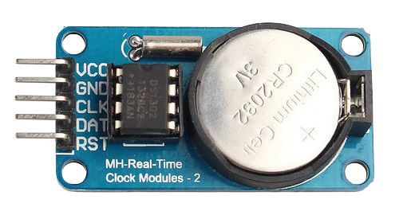

注釈
こんにちは、SunFounderのRaspberry Pi & Arduino & ESP32愛好家コミュニティへようこそ！Facebook上でRaspberry Pi、Arduino、ESP32についてもっと深く掘り下げ、他の愛好家と交流しましょう。
参加する理由は？
エキスパートサポート：コミュニティやチームの助けを借りて、販売後の問題や技術的な課題を解決します。
学び＆共有：ヒントやチュートリアルを交換してスキルを向上させましょう。
独占的なプレビュー：新製品の発表や先行プレビューに早期アクセスしましょう。
特別割引：最新製品の独占割引をお楽しみください。
祭りのプロモーションとギフト：ギフトや祝日のプロモーションに参加しましょう。
👉 私たちと一緒に探索し、創造する準備はできていますか？[ここ]をクリックして今すぐ参加しましょう！
リアルタイムクロックモジュール（DS1302）


概要
DS1302リアルタイムクロックモジュールは、日付と時刻を正確に管理する装置です。正確なタイミングやスケジューリングが必要なプロジェクトに活用できます。Arduinoを用いてデジタル時計を作成する際にも使用可能です。
原理
DS1302は、アメリカのDALLAS社が開発したトリックル充電クロックチップです。リアルタイムの時計・カレンダー機能と31バイトの静的RAMを内蔵し、MCUとはシンプルなシリアルポートを介して通信可能です。このクロック・カレンダーサーキットは、秒、分、時、日、週、月、年の情報を提供します。DS1302は、月ごとの日数や閏年の日数も自動で調整できます。24時間制と12時間制のどちらを使用するかはAM/PMで選択可能です。Reset（RST）ケーブル、I/Oデータ（SDA）ケーブル、シリアルクロック（SCL）ケーブルの3本のケーブルでMCUと簡単に通信できます。
使い方
使用する電子部品
Arduino Uno R4またはR3ボード * 1
リアルタイムクロックモジュール（DS1302）* 1
ジャンパーワイヤ
回路組み立て

コード
注釈
ライブラリのインストールにはArduinoライブラリマネージャを使用し、 「Rtc by Makuna」 と検索してインストールしてください。
コードの説明
初期化とライブラリのインクルード
注釈
ライブラリのインストールにはArduinoライブラリマネージャを使用し、 「Rtc by Makuna」 と検索してインストールしてください。
DS1302 RTCモジュールに必要なライブラリをインクルードします。
#include <ThreeWire.h> #include <RtcDS1302.h>
ピンの定義とRTCインスタンスの作成
通信用のピンを定義し、RTCのインスタンスを作成します。
const int IO = 4; // DAT const int SCLK = 5; // CLK const int CE = 2; // RST ThreeWire myWire(4, 5, 2); // IO, SCLK, CE RtcDS1302<ThreeWire> Rtc(myWire);
setup()関数この関数は、シリアル通信を初期化し、RTCモジュールを設定します。RTCが正確に動作しているかいくつかのチェックを行います。
void setup() { Serial.begin(9600); Serial.print("compiled: "); Serial.print(__DATE__); Serial.println(__TIME__); Rtc.Begin(); RtcDateTime compiled = RtcDateTime(__DATE__, __TIME__); printDateTime(compiled); Serial.println(); if (!Rtc.IsDateTimeValid()) { // Common Causes: // 1) first time you ran and the device wasn't running yet // 2) the battery on the device is low or even missing Serial.println("RTC lost confidence in the DateTime!"); Rtc.SetDateTime(compiled); } if (Rtc.GetIsWriteProtected()) { Serial.println("RTC was write protected, enabling writing now"); Rtc.SetIsWriteProtected(false); } if (!Rtc.GetIsRunning()) { Serial.println("RTC was not actively running, starting now"); Rtc.SetIsRunning(true); } RtcDateTime now = Rtc.GetDateTime(); if (now < compiled) { Serial.println("RTC is older than compile time! (Updating DateTime)"); Rtc.SetDateTime(compiled); } else if (now > compiled) { Serial.println("RTC is newer than compile time. (this is expected)"); } else if (now == compiled) { Serial.println("RTC is the same as compile time! (not expected but all is fine)"); } }
loop()関数この関数は、定期的にRTCから現在の日付と時刻を取得し、シリアルモニターに表示します。また、RTCがまだ有効な日付と時刻を維持しているかどうかを確認します。
void loop() { RtcDateTime now = Rtc.GetDateTime(); printDateTime(now); Serial.println(); if (!now.IsValid()) { // Common Causes: // 1) the battery on the device is low or even missing and the power line was disconnected Serial.println("RTC lost confidence in the DateTime!"); } delay(5000); // five seconds }
日付と時刻の表示関数
RtcDateTimeオブジェクトを引数として受け取り、シリアルモニターに日付と時刻を整形して出力するヘルパー関数です。void printDateTime(const RtcDateTime& dt) { char datestring[20]; snprintf_P(datestring, countof(datestring), PSTR("%02u/%02u/%04u %02u:%02u:%02u"), dt.Month(), dt.Day(), dt.Year(), dt.Hour(), dt.Minute(), dt.Second()); Serial.print(datestring); }
追加のアイデア
LCDまたはシリアルモニターに時間を表示
特定の時間にイベントやアラームをスケジュール